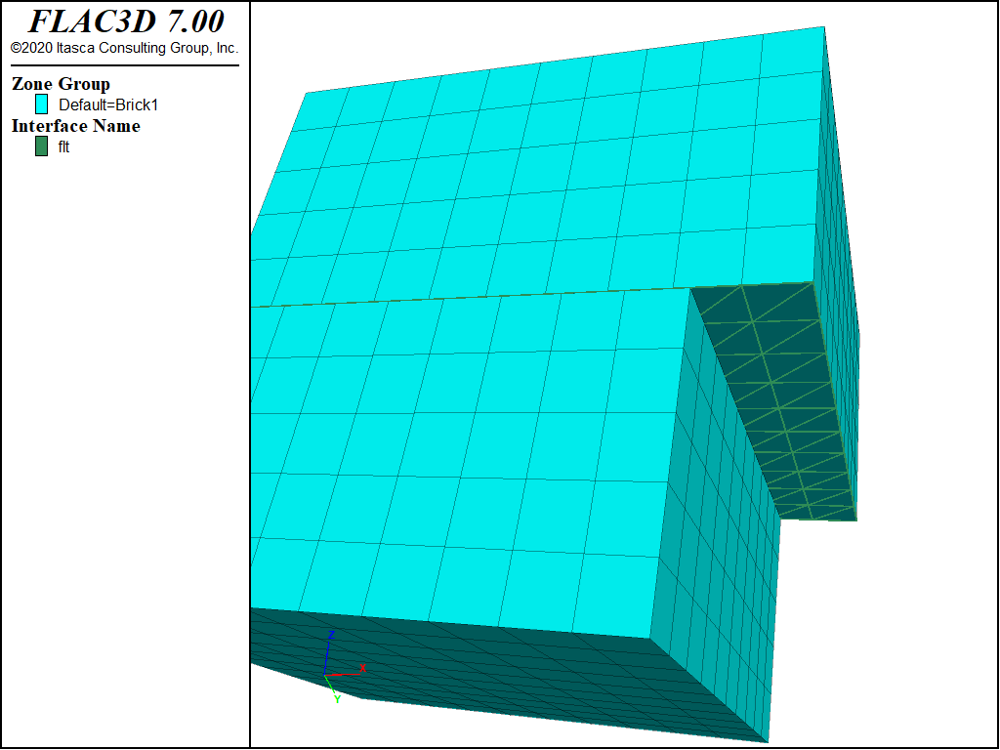

接触面
模型中经常需要表示可能发生滑动或分离的平面。典型例子是地质断层，但在结构与土体等材料之间的边界上，也可能需要这样处理。
需要时，可以在网格单元面上创建接触面来表示此类断层。接触面采用含拉伸和剪切黏结的库仑滑动模型。虽然 FLAC3D 可以处理多个接触面，但如果表面的数量或复杂程度过高，建议考虑使用 3DEC。
有关 FLAC3D 接触面及其最高效用法的完整讨论，见FLAC3D 理论与背景（FLAC3D Theory and Background）中的接触面（Interfaces）。本节主要提供接触面的简单入门介绍，以及最需要注意的问题。
接触面最常通过 单元界面创建按面（zone interface create by-face） 命令创建：
zone interface 'flt' create by-face separate range position-z 5
zone interface node property stiffness-normal 1e8 stiffness-shear 1e8
该命令将位于 \(z=5\) 的所有网格单元面分离，并在一侧布置接触面单元和节点，创建名为 flt 的接触面。接触面节点与不属于接触面自身的网格单元外表面接触时，便会检测到接触（并产生力）。


图 1：接触面滑移产生的不连续。
每次引用接触面都使用名称（与 表格插值取值（table） 命令类似），以指明所引用的接触面。接触面不会与自身接触，因此不能把模型中所有接触表面都使用同一接触面名称。
您可能熟悉 FLAC 的接触面，但 FLAC3D 的接触面功能在许多方面有所不同。必须熟悉 FLAC3D 接触面功能的几个重要特点。
单面性
与 FLAC 中不同，FLAC3D 的接触面是单面对象。接触面单元通常附着于网格单元外表面创建，进而创建接触面节点。所有接触检测均发生在接触面节点与网格单元外表面之间。
有时，仅在网格中现有不连续面的一侧创建接触面单元可能较困难。使用几何范围元素选面时，两侧的面位于完全相同的位置。如果两侧网格单元具有不同分组名，可以利用此区别选择其中一侧。此外，范围方向（range orientation） 范围元素可以选择法向向量位于所选方向的面。
如果断层两侧离散划分不同，应将接触面单元施加在面较小的一侧。
最常见的情况，是从连续网格开始创建接触面。此时，最简单的方式是使用 separate 关键字，在一条命令中同时分离网格并创建接触面（如上例所示）。可用 new-side-origin 关键字确定将接触面单元施加到分离后的哪一侧，选择的是与原点位置相反的一侧。在上例中，若要选择另一侧，可将命令改为：
; 创建界面
zone interface 'flt' create by-face separate new-side-origin (0,0,10) ...
绝对穿透量
与 FLAC3D 中几乎所有其他系统不同，由接触面穿透产生的法向应力采用绝对而非增量方式计算。这意味着沿法向相对于接触面移动网格点，会立即影响计算的法向应力。这对累计剪应力并不成立，后者仍采用增量方式。
在小应变模式下，网格点的实际位置不会随速度累积而移动。可以根据位移场确定绝对穿透量，但在 FLAC3D 中，位移只是输出值，可以随时重置。因此，为支持小应变接触面，引入了称为“小位移”的场。这是一种矢量场，仅在小应变模式下每步根据速度场累积。计算接触面穿透时，网格点位置由当前位置加小应变位移确定。可通过 单元网格点初始化位移小（zone gridpoint initialize displacement-small） 命令初始化小应变位移；在网格发生某些运动后，这有时可用于重置接触面的有效穿透量。
为在不实际移动网格点的情况下初始化接触面应力，我们引入法向应力增量，将其加到根据绝对穿透量计算的法向应力上。发出 初始化界面节点应力命令（zone interface node initialize-stresses） 命令时设置的就是这一数值，也可以通过 单元界面节点应力法向增量（zone interface node stress-normal-increment） 明确设置。
单一目标
给定接触面节点同一时间只能与一个目标表面面片接触。
对于材料中的单个断层，每个接触面节点有一个目标面就足以准确模拟断层。但如果多个接触面相交，相交线上每个节点的接触数不足以求解该系统。缓解此问题的方法见接触面（Interfaces）一节的进一步讨论。不过，如果必须准确模拟多个相交断层周围的具体行为，最终可能更适合使用 3DEC。
| 这些内容对您有帮助吗？… 版权与免责声明 |
FLAC3D © 2019, Itasca | 原文更新于 2020 年 10 月 8 日 |